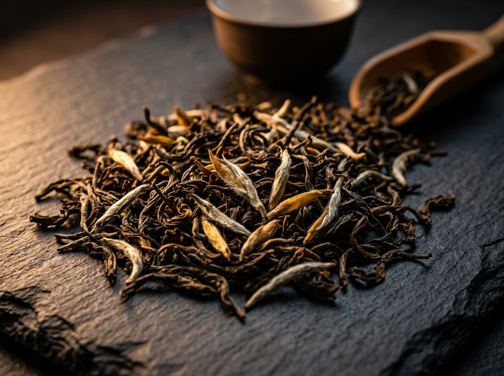

Black Pepper
Indigenous to the wet hill slopes, high in piperine, offering crisp sharp heat accompanied by rich fruity undertones.
For thousands of years, Ceylon has captivated the world through its singular terroirs: high-altitude tea clouds, delicate master-rolled true cinnamon, aromatic spice gardens, and living artisanal craft.
For thousands of years, navigators, scholars, and spice traders recorded a legendary island set like a jewel in the warm currents of the Indian Ocean. Arab merchants called it Serendib, the source of serendipity. Ancient Sanskrit chroniclers named it Lanka, resplendent. Portuguese, Dutch, and British seafaring explorers charted it as Ceylon.
Ceylon was never merely a geographic coordinate. It was an extraordinary biosphere where the equatorial sun met monsoon winds, nourishing mountain cloud forests, fertile river valleys, and aromatic coastal soils.
Long before modern global supply chains flattened the flavours of the earth, Ceylon was renowned across empires for three distinct gifts: botanical spices of unmatched purity, delicate mountain teas, and an artisan culture rooted in respect for natural materials.


No spice reveals the difference between industrial imitation and true heritage more clearly than cinnamon.
Most of what the modern world purchases as cinnamon is not cinnamon at all. It is cassia (Cinnamomum cassia), harvested from thick, tough tree bark grown across China and Southeast Asia. Cassia is hard, hollow, dark brown, and pungent, containing elevated levels of coumarin—a naturally occurring compound that can be harsh on the body.
True cinnamon—Cinnamomum verum—is indigenous exclusively to the sunny, sandy soils of southern Sri Lanka. Here, the harvesting of cinnamon is a heritage craft passed down through generations. Master peelers shave only the tender, paper-thin inner bark of the tree. While still moist and fragrant, these gossamer ribbons are carefully rolled by hand, layer upon layer, forming delicate composite quills that resemble rolled parchment.
In the nineteenth century, when coffee crops across Ceylon failed, the island’s mountainous central spine discovered its true calling: Camellia sinensis, the tea plant.
Ceylon tea quickly established an international reputation that rivaled the great wine terroirs of Europe. The island’s geography is singular. Two distinct monsoon systems sweep across the island at different times of the year, creating microclimates where cool highland elevation, persistent cloud mist, and sudden mountain sunshine alter the character of tea bushes within a few miles.
We focus exclusively on orthodox whole-leaf processing:
Unlike the commodity CTC (Crush, Tear, Curl) dust found in commercial tea bags, orthodox Ceylon tea brews into a bright, golden-amber liquor. It offers refined notes of citrus, honeyed blossom, and smooth mountain sweetness. It requires no milk or sugar to mask bitterness, because true orthodox craft leaves no bitterness behind.

Beyond cinnamon and tea, Ceylon has nurtured an ancient agro-forestry tradition known as spice gardens. Unlike vast monoculture plantations that deplete the soil, island spices grow beneath the multi-tiered canopy of fruit trees, coconut palms, and shade-giving forest giants.
Indigenous to the wet hill slopes, high in piperine, offering crisp sharp heat accompanied by rich fruity undertones.
Hand-picked unopened flower buds dried slowly under tropical sun, bursting with dense, fragrant essential eugenol oil.
The queen of spices, thriving in cool, shaded ravine microclimates, offering crisp, piney, and herbal brightness.
Enclosed within fragrant golden fruit, hand-separated and sun-cured to preserve delicate warm aromatics.

Sri Lanka’s heritage is not limited to what is grown; it lives equally in what is shaped by hand.
Long before mass industrial manufacturing, village communities across Ceylon practiced a philosophy of profound material harmony: take only what the earth offers freely, and leave nothing to waste.
Across generations, master craftsmen and women have transformed renewable, wild, and reclaimed island resources—from fallen aged coconut shells and seasoned orchard timbers, to riverbed terracotta and hand-spun endemic reeds—into durable, tactile objects designed to outlast a lifetime.
Our artisan collections honor these ancestral wood-turners, carvers, and potters. Free from synthetic plastics, chemical lacquers, or mechanical assembly lines, every piece bears the subtle variations, warmth, and thumbprint of its maker.
Our signature Coconut Shell Tea Cup represents this philosophy in its purest form—turning a fallen agricultural byproduct into a refined daily ritual vessel:
Sourcing solely fallen botanical shells, pruned orchard hardwoods, and natural river clays—never felling live forest trees.
Shaped on foot-pedal lathes, handheld carving chisels, and potter’s wheels, respecting natural grain and temper.
Hand-finished with organic fibers and river sand abrasives, creating a warm, tactile patina without synthetic coatings.
Sealed solely with cold-pressed virgin plant oils or natural beeswax—100% biodegradable and food-safe for hot infusions.
Why does Graceylon celebrate centuries-old methods when modern industry can produce goods in seconds?
Because speed strips away soul. When provenance is erased, food becomes an anonymous calorie, tea becomes colored water, and homeware becomes disposable plastic.
Heritage gives us anchor. When you brew an orthodox Ceylon leaf, grate a quill of true cinnamon, or sip from a hand-shaped artisan vessel, you participate in a lineage of craftsmanship that has honoured the earth for centuries.
Step into our sanctuary. Choose a harvest shaped by island soil, seasonal winds, and generational craft.
Ceylon, felt. Luxury, lived.Thank you for embarking on this sensory journey. Your exclusive artisanal treasures are being prepared. A private dispatch email will reach your inbox shortly.